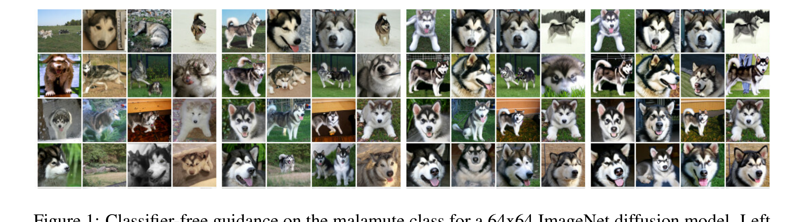
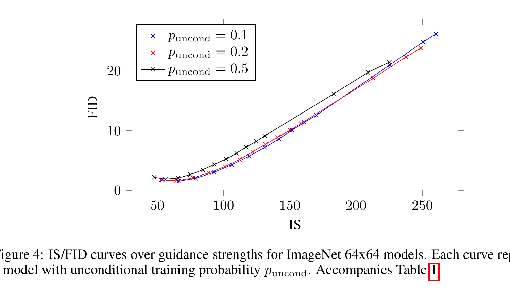

Classifier-Free Diffusion Guidance
Jonathan Ho, Tim Salimans · Google Research · arXiv:2207.12598
CFG 不是扩散训练目标，也不是采样器。它是条件采样时修改模型输出的方法：一个网络同时学会“有条件”和“无条件”去噪，推理时将两种预测沿差分方向外推。DDPM/DDIM 决定怎么走，CFG 决定条件把轨迹往哪里拉。
§1 一句话：用“条件差分”代替外部分类器梯度
训练时以小概率把条件 $c$ 替换为空条件 $\varnothing$；推理时同一个去噪器分别计算 $\epsilon_\theta(x_t,c)$ 与 $\epsilon_\theta(x_t,\varnothing)$，再放大二者之差，从而提升条件一致性。
展开原文 · Abstract
“We jointly train a conditional and an unconditional diffusion model.”

§2 为什么要去掉分类器
Classifier guidance 将扩散 score 与 $\nabla_{x_t}\log p(c|x_t)$ 相加。问题是这个分类器必须能处理所有噪声级别的 $x_t$，不能直接拿一个只见过干净图像的分类器即插即用；还会增加训练管线，并可能利用分类器指标的漏洞。
2.2 条件 dropout：同一组参数学两项任务
1. 正常构造带噪样本
抽 $t$ 和 $\epsilon$，得到 $x_t$，监督目标仍是噪声预测；CFG 不改变 DDPM 式 loss。
2. 随机丢弃条件
以 $p_{\text{uncond}}$ 将类别、文本或其他条件替换为 $\varnothing$。论文实验常用 0.1 或 0.2。
3. 一个网络同时学两种 score
有条件 batch 学 $\epsilon_\theta(x_t,c)$；空条件 batch 学 $\epsilon_\theta(x_t,\varnothing)$。
4. 推理做两次前向并外推
二者差值近似“条件把 score 推向哪里”，乘引导强度后加回无条件预测。
§3 核心公式：沿条件差分方向外推
- $\epsilon_c$
- 带条件预测：同时包含“当前噪声应如何去掉”和“满足条件应往哪里走”。
- $\epsilon_u$
- 无条件预测：只描述数据分布本身，不要求满足特定条件。
- $\epsilon_c-\epsilon_u$
- 条件带来的方向差；放大它，相当于更强地追逐条件。
- $w$
- 论文的额外引导权重；$w=0$ 已经得到条件预测，而不是无条件预测。
- $\epsilon_u$
- 无条件基线，描述“像数据”的一般去噪方向。
- $\epsilon_c-\epsilon_u$
- 条件带来的增量方向：在保持像真实样本的基础上，哪一部分变化会让结果更符合文本、类别或动作条件。
- $s$
- 条件增量的放大倍数；$s=0$ 得到无条件结果，$s=1$ 等于普通条件预测，$s>1$ 才是通常所说的加强 guidance。
- $\tilde\epsilon$
- 最终送入采样器的噪声预测。增大 $s$ 往往提高条件一致性，但可能牺牲多样性并产生过饱和或轨迹不稳定。
3.2 最常见实现坑：scale 差 1
论文 $w=0$ 等于纯条件预测；常见代码 $s=0$ 等于无条件预测、$s=1$ 等于纯条件预测。因此别人说“guidance scale 7.5”时，通常指 $s$，不一定指论文里的 $w$。
3.3 采样开销：每一步通常两次网络前向
工程上常把有/无条件样本拼进 batch，一次批处理前向计算两组输出；FLOPs 和显存压力仍近似翻倍。CFG 可以与 DDPM、DDIM、ODE/flow sampler 组合，因为它修改的是每步模型预测。
§4 引导强度不是“质量旋钮”，而是分布重加权

§5 局限与风险
多样性下降：罕见模式与条件边界样本更难出现。
过饱和/伪影：外推超出模型训练分布。
算力翻倍：每个采样步需要有/无条件输出。
偏差放大：训练分布里被低估的模式会被引导进一步压低。
论文还提醒：条件与无条件网络给出的向量场是学习结果，其差值未必严格等于某个真实分类器的保守梯度。把它称为“隐式分类器”有直觉价值，但不要过度按精确概率公式解释。
§6 对 World Action Model / VLA 的意义
在 WAM 中，$c$ 可以是语言指令、过去观测、机器人本体状态、目标图像或动作。CFG 让模型在推理时调节“服从条件”与“保持自然世界先验”的力度，但前提是训练时真的见过空条件分支。
§7 一页记住
训练：以小概率把条件置空，一个网络学两种预测。
推理：放大 $\epsilon_c-\epsilon_u$。
收益：无需带噪分类器，可连续调条件忠实度。
代价：约两倍网络前向，并以多样性和分布覆盖换取更典型样本。